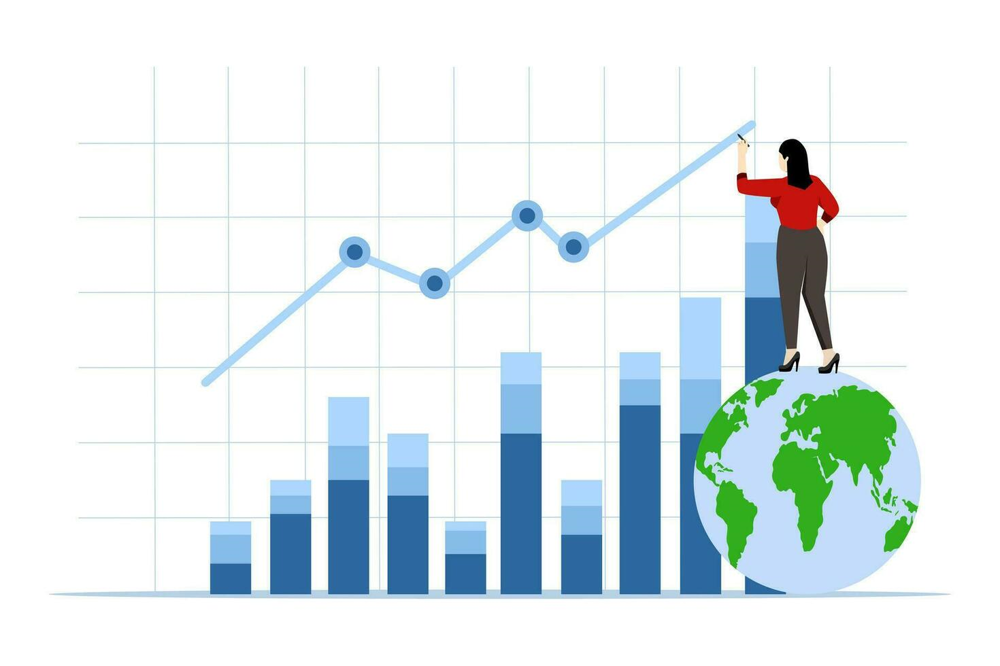
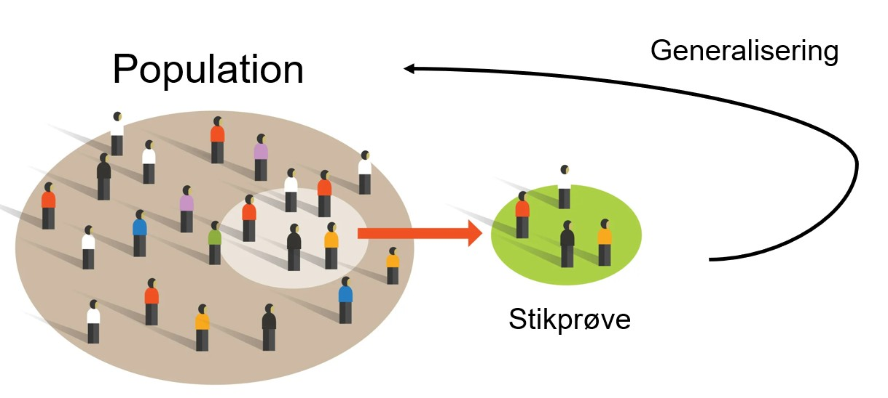
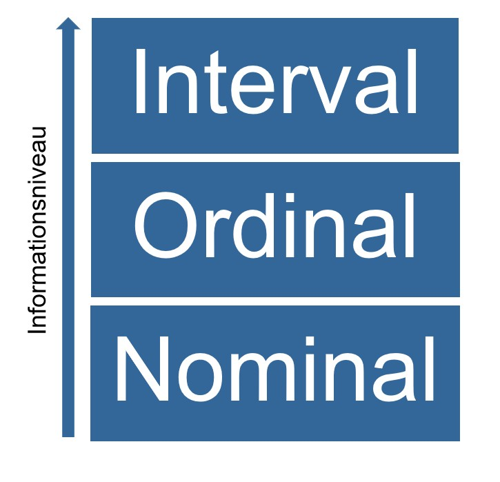

Rows: 13,799
Columns: 27
$ land <chr> "DE", "DE", "DE", "DE", "DE", "DE", "DE", "DE",…
$ stemte_valg <fct> 2, 1, 1, 1, 1, 1, 1, 1, 1, 1, 1, 1, 1, 1, 1, 1,…
$ mindske_ekon_ulig <fct> Enig, Meget enig, Meget enig, Enig, Hverken/ell…
$ job <fct> Ja, Ja, Ja, Ja, Ja, Nej, Ja, Ja, Ja, Ja, Nej, J…
$ koen <fct> Kvinde, Kvinde, Kvinde, Mand, Kvinde, Kvinde, K…
$ udd <ord> Ungdoms-/erhvervsuddannelse, Ungdoms-/erhvervsu…
$ udd_aar <dbl> 13, 11, 20, 12, 14, 13, 12, 14, 16, 14, 6, 13, …
$ beskaeft_job <fct> 1, 0, 1, 0, 1, 0, 0, 1, 1, 0, 0, 1, 0, 1, 0, 0,…
$ beskaeft_udd <fct> 0, 0, 0, 0, 0, 0, 0, 0, 0, 0, 0, 0, 0, 0, 0, 0,…
$ beskaeft_ledig <fct> 0, 0, 0, 0, 0, 0, 0, 0, 0, 0, 0, 0, 0, 0, 0, 0,…
$ beskeaft_hjemmegaaende <fct> 0, 0, 0, 0, 0, 0, 0, 0, 0, 0, 0, 0, 0, 0, 0, 0,…
$ beskaeft_syg <fct> 0, 0, 0, 0, 0, 0, 0, 0, 1, 0, 0, 0, 0, 0, 0, 0,…
$ beskaeft_pension <fct> 0, 1, 1, 1, 0, 0, 1, 0, 0, 1, 0, 0, 1, 0, 1, 0,…
$ ansaettelse_type <fct> Lønmodtager, Lønmodtager, Selvstændig, Lønmodta…
$ antal_timer_arb <dbl> 19, 40, NA, 35, 50, NA, 30, 35, 25, 40, NA, 40,…
$ fagforeningsmedlem <fct> Nej, Nej, Nej, Tidligere, Nej, Nej, Nej, Nej, T…
$ indkomst_husholdning <dbl> 3, 6, 6, 6, 8, NA, 4, 5, 1, 6, NA, 8, NA, 10, 6…
$ udd_partner <ord> Ungdoms-/erhvervsuddannelse, Lang videregående,…
$ udd_far <ord> Ungdoms-/erhvervsuddannelse, Ungdoms-/erhvervsu…
$ udd_mor <ord> NA, Grundskole, Grundskole, Grundskole, Ungdoms…
$ fair_chance_job <dbl> 10, 5, 10, 8, 5, 8, 7, 7, 10, 9, 0, 10, 10, 10,…
$ net_indkomst <dbl> 20000, 530, 350, 2500, 4000, 570, 2100, 1150, 5…
$ unfair_indkomst <fct> Retfærdig, Retfærdig, Retfærdig, Uretfærdigt la…
$ fair_ekon_ulighed <fct> Uretfærdigt lav, Uretfærdigt høj, Retfærdig, Ur…
$ erfaring_vigtig_job <fct> Lidt vigtigt, Ret vigtigt, Meget vigtigt, Ikke …
$ bekendt_vigtig_job <fct> Ret vigtigt, Ret vigtigt, Ret vigtigt, Ret vigt…
$ alder <dbl> 26, 65, 74, 64, 54, 20, 71, 41, 62, 65, 67, 47,…Recap
Statistik E24 (15 ECTS)
ved Mikkeline Munk Nielsen
Hvad skal vi bruge statistik til?
Skabe overblik over tendenser
Finde mønstre
Undersøge sammenhænge og forskellighed
Teste teorier
Udvikle forklaringer og forudsigelser 
Fokusområder
Sidste semester:
Stikprøve teori
Grundlæggende statistik (måleniveauer, centrum- og spredningsmål)
Hypotesetest
Beskrivende statistik (uni- og bivariat)
Dette semester
Fokus på inferens
Forklarende statistik
Lineær regression
Stikprøver
En stikprøve er en lille del af universet, der udvælges til at repræsentere/beskrive hele universet 
Stikprøveudtræk og statistisk usikkerhed
På baggrund af en stikprøve drages konklusioner om en population (inferens). Slutningen er baseret på stikprøvens repræsentativitet
Den bedste måde at opnå repræsentativitet på er at anvende en udvælgelsesmekanisme baseret på tilfældighed!
Hvorfor virker tilfældigt udtræk ift. at sikre en repræsentativ stikprøve?
- Hver enhed i populationen har samme sandsynlighed for at blive udvalgt (undgår systematisk bias/skævvridning)
- Sikrer, at stikprøven i gennemsnit er repræsentativ for populationen.
- Tilfældighed i stikprøveudtræk bygger på principper om lige sandsynlighed, store tals lov og den centrale grænseværdisætning.
Stikprøveudtræk og statistisk usikkerhed
Vi bruger stikprøver som udgangspunkt for at udtale os om en population!
Vi kan måske ikke udregne gennemsnitsindkomsten for HELE populationen \((\mu)\) men vi kan udregne et stikprøvegennemsnit \((\bar{x})\)
Fordi en stikprøve ikke svarer præcist den population, som den er trukket fra, vil der altid være en statistisk usikkerhed forbundet med en generalisering fra stikprøve til population (også kaldet margin of error).
Inferens
Statistik handler bl.a. om at sige noget under usikkerhed og om at vurdere, hvor stor usikkerheden på ens udsagn er.
Den del af statistikken, hvor vi bruger stikprøver til at udtale os om populationer, kaldes inferentiel statistik!
Her bruges inferenceskriterier som regler til at afgøre, om resultaterne fra en stikprøve er overbevisende nok til at kunne overføres til hele populationen. De hjælper med at vurdere, om de mønstre, man ser, er reelle eller bare skyldes tilfældigheder
I kender dem i praksis som p-værdier…
Hvorfor hypotese-tests er vigtige…
Vi bruger hypotesetest til at evaluere hypoteser/påstande om en population baseret på stikprøvedata
Eksempel på hypotese: der er forskel på gennemsnitslønnen for mænd og kvinder i Grønland
Formål: At træffe beslutninger om, hvorvidt der er tilstrækkeligt bevis for at afvise hypotesen med udgangspunkt i stikprøven
Konkret bruger vi dem til at vurdere, om forskelle og observationer vi ser i vores stikprøve er tilfælde pga. stikprøveusikkerhed, eller om det er sandsynligt, at de er udtryk for rigtige forskelle i populationen
Fremgangsmåde
I hypotesetests stiller man to hypoteser op og tester dem mod hinanden:
Nulhypotese (H0): En påstand om, at der ikke er nogen signifikant forskel eller virkning.
Alternativ hypotese (H1): En påstand om, at der er en signifikant forskel eller virkning.
Eksempel:
H0: Der er ikke nogenforskel i gennemsnitslønnen for mænd og kvinder
H1: Der er forskel i gennemsnitslønnen for mænd og kvinder
Fremgangsmåde
- Formulering af hypoteser: Formulering af nulhypotese og alternativ hypotese
- Valg af signifikansniveau: Fastlæggelse af den sandsynlighed vi har defineret i konfidensintervallet som den acceptable usikkerhed (standard \(0,05 = 5\%\))
- Beregning af teststatistik: Anvendelse af passende statistisk test til at beregne teststatistikken baseret på stikprøvedataene (dette gør R for jer)
- Afgørelse: Sammenligning af teststatistikken med en kritisk værdi eller p-værdi for at afgøre, om man skal afvise nulhypotesen.
Statistisk signifikans
Signifikans er et ultra-vigtigt begreb i hypotesetests, og relaterer sig tilbage til statistisk usikkerhed.
Før en hypotesetest fastsættes det acceptable niveau af statistisk usikkerhed, nemlig sandsynligheden for at afvise nulhypotesen, hvis den er sand (type I fejl).
Man arbejder typisk med 𝛼=0,05 dvs. 5 % sandsynlighed for at begå type I fejl
Fortolkning af statistisk signifikans
Øvelse 10 min:
I t-testen for bivariat analyse har I lært at teste, om der er forskel på et gennemsnit for to grupper (f.eks. om gennemsnitsindkomsten er forskellig blandt mænd og kvinder).
Hvis t-testen returnerer en p-værdi på under 0,05 afvises nulhypotesen om, at der ingen forskel er på gennemsnitsindkomsten.
I dette tilfælde konkluderer man, at der er en statistisk signifikant forskel på gennemsnitsindkomsten for mænd og kvinder. Men hvad betyder det, egentlig?
Fortolkning af statistisk signifikans
Statistisk signifikant betyder, at vi - med det acceptable niveau af usikkerhed, som vi har fastlagt før testen (typisk 0,05 = 5 %) - kan konkludere, at den forskel vi har estimeret med udgangspunkt i stikprøven også er tilstede i populationen.
Hvordan? Vi udregner med udgangspunkt i stikprøven, at det er tilstrækkeligt usandsynligt at trække en stikprøve med denne forskel, hvis den ikke faktisk findes i populationen.
P-værdier og signifikans i praksis…
I praksis sammenlignes \(p\) -værdien med signifikansniveauet \(\alpha\) (fx \(0,05\)):
Hvis \(p < \alpha\), afvises H0 (statistisk signifikant).
Hvis \(p \geq \alpha\), kan H0 ikke afvises (ikke statistisk signifikant)
Hvis vores signifikansniveau er sat til \(5%\)% afviser vi nulhypotesen, hvis vores \(p<0,05\).
Hvis \(p≥0,05\) kan vi ikke afvise nulhypotesen. Dette er ikke det samme som, at nulhypotesen er sand! Vi kan bare ikke afvise den med udgangspunkt i den pågældende stikprøve.
P-værdier og signifikans i praksis…
Øvelse 2 min
Det er standard af fastlægge et signifikansniveau på 5 % (\(\alpha=0,05\)), men det er sådan set arbitrært. I nogle discpliner arbejder man med \(\alpha=0,1\). Diskutér, hvad dette betyder for fortolkningen af resultatet af en hypotesetest.
Hypotese-tests i sidste semester
Sidste semester arbejdede vi med fire hypotesetests:
t-test for et gennemsnit mod en forventet værdi (univariat)
t-test for et gennemsnit mellem to grupper (bivariat)
\(\chi^2\) test mod en forventet fordeling
\(\chi^2\) test for uafhængighed
Øvelse 15 min: Diskutér hvad hver test bruges til i praksis. Hvad kan de hjælpe os med at svare på?
Variable og skalaer
Variable inddeles først i to typer baseret på deres skala:
Diskrete variable: kan antage et endeligt antal værdier
Kontinuerte variable: kan antage uendeligt mange værdier inden for en given range
4 min. øvelse: kom med eksempler på hhv. diskrete og kontinuerte variable
Variable og skalaer
Variable inddeles først i to typer baseret på deres skala:
Diskrete variable: kan antage et endeligt antal værdier, f.eks. antal varer solgt i en butik. (tællevariable)
Kontinuerte variable: kan antage uendeligt mange værdier inden for en given range, f.eks. pris
Variable og skalaer
Dernæst kategoriseres variable i måleniveauer, afhængigt af hvilken skala vi måler variablen på. Måleniveauer beskriver, hvordan data kan klassificeres og behandles i statistiske analyser. De angiver:

Variable og skalaer
- Vi får mere information og flere muligheder, når vi går op i måleniveau.
- Man kan altid gå ned, ved at omkode sine variable (f.eks. alder til alderskategorier eller indkomst til indkomstkvartiler), men man kan ikke gå op.
- Binære/dikotome variable, der enten kan tage værdien 0 eller 1 er særlige og kan behandles som alle måleniveauer.
Variable og skalaer
Øvelse 5 minutter: diskutér hvad der karakteriserer hvert måleniveau og giv eksempler på variable for hvert måleniveau

Variable i R
Variablene i R har en type, vist i skrå parenteser <> efter variabelnavnet. Typerne påvirker hvad funktionerne gør med variablen - og det hænger faktisk sammen med variablens måleniveau!
Variable i R
| Type | Forklaring | Eks. | Måleniveau |
|---|---|---|---|
| Numeric | Numeriske værdier, både heltal og decimaltal. | 3, 42.5, -7, 0.001 |
Interval |
| Integer | Heltal (underkategori af numeric) | 1L, 100L, -50L |
Interval |
| Character | Tekst eller strenge | "Hello world", |
Nominal |
| Factor | Kategoriske data med faste niveauer | "Mand", "Kvinde" |
Nominal eller Ordinal (<ord>) |
| Boolean | Boolean values (sand/falsk). | TRUE, FALSE |
Nominal |
Mød groupby() og summarise()
group_by()bruges til at gruppere data efter én eller flere variabler.Det skaber grupper i datasættet, som derefter kan opsummeres eller manipuleres separat.
Når dine data er grupperet, kan du bruge
summarise()til at beregne opsummeringer for hver gruppe.
- Eksempler på opsummeringer: gennemsnit, median, sum eller brugerdefinerede beregninger.
Mød groupby() og summarise()
Datasæt før groupby():
# A tibble: 6 × 27
land stemte_valg mindske_ekon_ulig job koen udd udd_aar beskaeft_job
<chr> <fct> <fct> <fct> <fct> <ord> <dbl> <fct>
1 DE 2 Enig Ja Kvinde Ungdoms… 13 1
2 DE 1 Meget enig Ja Kvinde Ungdoms… 11 0
3 DE 1 Meget enig Ja Kvinde Melleml… 20 1
4 DE 1 Enig Ja Mand Ungdoms… 12 0
5 DE 1 Hverken/eller Ja Kvinde <NA> 14 1
6 DE 1 Meget enig Nej Kvinde Ungdoms… 13 0
# ℹ 19 more variables: beskaeft_udd <fct>, beskaeft_ledig <fct>,
# beskeaft_hjemmegaaende <fct>, beskaeft_syg <fct>, beskaeft_pension <fct>,
# ansaettelse_type <fct>, antal_timer_arb <dbl>, fagforeningsmedlem <fct>,
# indkomst_husholdning <dbl>, udd_partner <ord>, udd_far <ord>,
# udd_mor <ord>, fair_chance_job <dbl>, net_indkomst <dbl>,
# unfair_indkomst <fct>, fair_ekon_ulighed <fct>, erfaring_vigtig_job <fct>,
# bekendt_vigtig_job <fct>, alder <dbl>Mød groupby() og summarise()
Vi kan nu bruge groupby() til at gruppere uddannelsesniveau og derefter summarise() til at beregne antal respondenter i og gennemsnitsindkomsten for hver gruppe:
df_ESS %>% group_by(udd) %>%
summarise(Gennemsnitsindkomst = mean(net_indkomst, na.rm = TRUE),
N = n())# A tibble: 5 × 3
udd Gennemsnitsindkomst N
<ord> <dbl> <int>
1 Grundskole 4075. 3087
2 Ungdoms-/erhvervsuddannelse 5545. 4501
3 Mellemlang videregående 8627. 3934
4 Lang videregående 9401. 2148
5 <NA> 6909. 129Øvelse i data wrangling
“Øvelse i BNP” ligger på hjemmesiden.